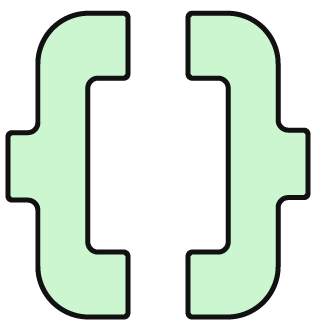
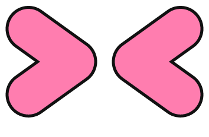

26✳︎


拖動貼紙 · 點一下旋轉因為熱愛技術，
所以聚在一起。
一場由社群發起，
為每一位開發者而生的技術盛會。
DevFest 是 Google Developer Groups（GDG）社群舉辦的年度技術活動。從第一次寫下 Hello World，到正在打造下一個產品，這裡都有值得交流的想法。
延續 Taipei 社群的分享精神，2026，我們準備一起寫下新的篇章。
找到你的社群 ↗︎你的好奇心，
想往哪裡去？
從熟悉的技術，走向新的可能。
先看看你感興趣的方向。
讓想像，
有實作的可能。
從生成式 AI 到機器學習應用，探索模型如何走進開發流程，讓你的下一個點子找到起點。
先探索感興趣的方向，完整議程即將公布精彩內容，
正在編譯中_
講者、議程與工作坊資訊
將陸續在這裡和你見面。
技術議程
從開發經驗到實作心得，和社群一起深入技術。
即將公布講者陣容
來自不同領域的開發者，分享各自的觀點。
即將公布現場交流
留一點時間，給一段意想不到的技術對話。
籌備中下一個點子，
一起寫。
12 月 13 日，在臺大博雅教學館見。
免費入場，名額有限，現在就預留你的位子。
出發前，
你可能想知道。
活動什麼時候、在哪裡舉辦？+
活動將於 2026 年 12 月 13 日（星期日）在國立臺灣大學博雅教學館舉辦。報到時間為 08:30–09:00，請至南側入口大廳報到。查看交通位置 ↗︎
現在可以報名了嗎？+
已開放報名！本次活動免費入場，名額有限，歡迎提前完成報名。立即免費報名 ↗︎
剛開始學程式，也適合參加嗎？+
歡迎對技術有興趣的朋友加入。議程公布後，可依主題與內容選擇適合自己的場次。
會有直播嗎？需要攜帶什麼？+
本次為實體活動，不提供線上直播或 YouTube 影片存檔。現場提供飲水機，請自備水壺。參加工作坊請攜帶已充飽電的筆電。
哪裡可以看到議程與講者？+
完整議程與講者名單即將公布，屆時可在「議程與講者」區塊查看場次內容與講者介紹。
把路線找好，
把好奇心帶來。
國立臺灣大學 · 博雅教學館
臺北市大安區羅斯福路四段 1 號
搭捷運，從公館出發
搭乘捷運松山新店線至公館站 3 號出口，沿羅斯福路往新生南路方向，從臺大校門進入校園，循椰林大道步行至博雅教學館，約需 10–15 分鐘。
出門前，
一起準備好。
少一點臨時找資訊，
多一點時間留給交流。
筆電充飽電
參加工作坊請自備筆電，並在出發前充飽電。
帶上你的水壺
現場有飲水機，請自備容器補充水分。
點心與垃圾一起帶走
可自備點心至餐飲區享用，離開時請自行帶走垃圾。
這一天，現場見
本次為實體活動，不提供線上直播，也不會有 YouTube 影片存檔。Wi-Fi 與活動交流頻道資訊即將公布。
一起維護友善的活動空間+
我們歡迎不同文化、背景、性別、性向及宗教的參與者。請帶著尊重、友善與同理心交流，遵守 Google 社群行為守則 ↗︎，並配合現場工作人員指示。
GDG Taipei 與 GDG Cloud Taipei 保留活動最終解釋權及參與資格判斷權。若有不符合場地或活動規範的行為，主辦單位可請參與者離場。
活動會結束，
交流繼續。
活動消息、技術分享，還有下一次見面的機會。
在你習慣的平台，找到 GDG Taipei。